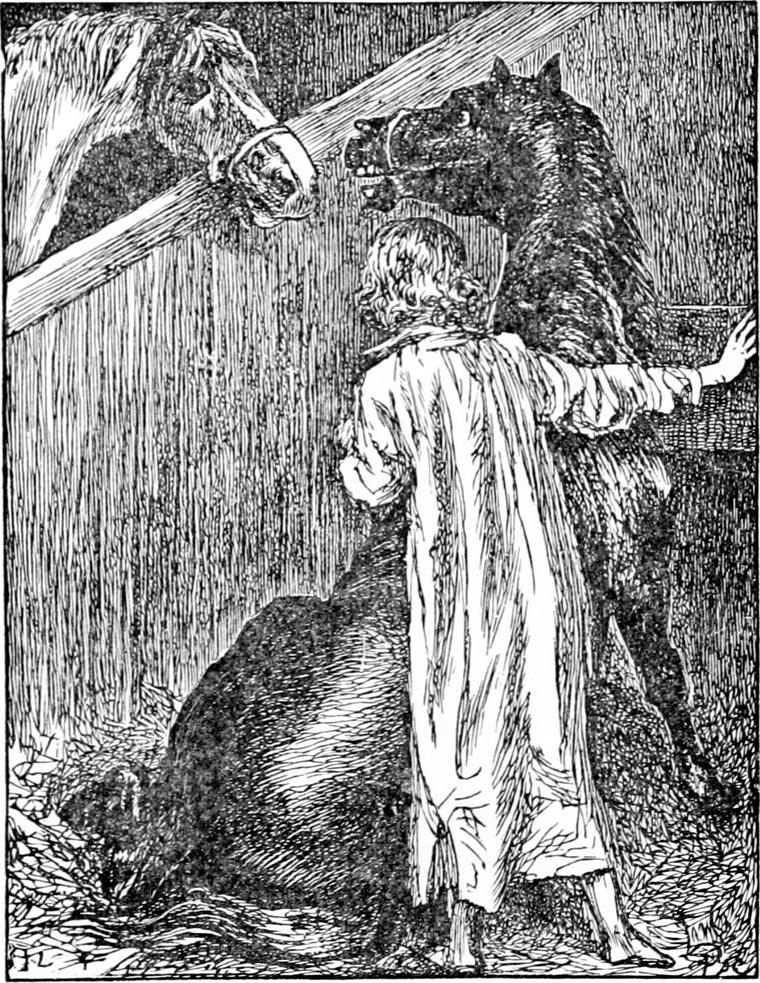

IT WAS Friday night, and Diamond, like the rest of the household, had had very little to eat that day. The mother would always pay the week's rent before she laid out anything even on food. His father had been very gloomy—so gloomy that he had actually been cross to his wife. It is a strange thing how pain of seeing the suffering of those we love will sometimes make us add to their suffering by being cross with them. This comes of not having faith enough in God, and shows how necessary this faith is, for when we lose it, we lose even the kindness which alone can soothe the suffering. Diamond in consequence had gone to bed very quiet and thoughtful—a little troubled indeed.
It had been a very stormy winter, and even now that the spring had come, the north wind often blew. When Diamond went to his bed, which was in a tiny room in the roof, he heard it like the sea moaning; and when he fell asleep he still heard the moaning. All at once he said to himself, “Am I awake, or am I asleep?” But he had no time to answer the question, for there was North Wind calling him. His heart beat very fast, it was such a long time since he had heard that voice. He jumped out of bed, and looked everywhere, but could not see her. “Diamond, come here,” she said again and again; but where the here was he could not tell. To be sure the room was all but quite dark, and she might be close beside him.
“Dear North Wind,” said Diamond, “I want so much to go to you, but I can't tell where.”
“Come here, Diamond,” was all her answer.
Diamond opened the door, and went out of the room, and down the stair and into the yard. His little heart was in a flutter, for he had long given up all thought of seeing her again. Neither now was he to see her. When he got out, a great puff of wind came against him, and in obedience to it he turned his back, and went as it blew. It blew him right up to the stable-door, and went on blowing.
“She wants me to go into the stable,” said Diamond to himself, “but the door is locked.”
He knew where the key was, in a certain hole in the wall—far too high for him to get at. He ran to the place, however: just as he reached it there came a wild blast, and down fell the key clanging on the stones at his feet. He picked it up, and ran back and opened the stable-door, and went in. And what do you think he saw?
A little light came through the dusty window from a gas-lamp, sufficient to show him Diamond and Ruby with their two heads up, looking at each other across the partition of their stalls. The light showed the white mark on Diamond's forehead, but Ruby's eye shone so bright, that he thought more light came out of it than went in. This is what he saw.
But what do you think he heard?
He heard the two horses talking to each other—in a strange language, which yet, somehow or other, he could understand, and turn over in his mind in English. The first words he heard were from Diamond, who apparently had been already quarrelling with Ruby.

“Look how fat you are Ruby!” said old Diamond. “You are so plump and your skin shines so, you ought to be ashamed of yourself.”
“There's no harm in being fat,” said Ruby in a deprecating tone. “No, nor in being sleek. I may as well shine as not.”
“No harm?” retorted Diamond. “Is it no harm to go eating up all poor master's oats, and taking up so much of his time grooming you, when you only work six hours—no, not six hours a day, and, as I hear, get along no faster than a big dray-horse with two tons behind him?—So they tell me.”
“Your master's not mine,” said Ruby. “I must attend to my own master's interests, and eat all that is given me, and be sleek and fat as I can, and go no faster than I need.”
“Now really if the rest of the horses weren't all asleep, poor things—they work till they're tired—I do believe they would get up and kick you out of the stable. You make me ashamed of being a horse. You dare to say my master ain't your master! That's your gratitude for the way he feeds you and spares you! Pray where would your carcass be if it weren't for him?”
“He doesn't do it for my sake. If I were his own horse, he would work me as hard as he does you.”
“And I'm proud to be so worked. I wouldn't be as fat as you—not for all you're worth. You're a disgrace to the stable. Look at the horse next you. He's something like a horse—all skin and bone. And his master ain't over kind to him either. He put a stinging lash on his whip last week. But that old horse knows he's got the wife and children to keep—as well as his drunken master—and he works like a horse. I daresay he grudges his master the beer he drinks, but I don't believe he grudges anything else.”
“Well, I don't grudge yours what he gets by me,” said Ruby.
“Gets!” retorted Diamond. “What he gets isn't worth grudging. It comes to next to nothing—what with your fat and shine.
“Well, at least you ought to be thankful you're the better for it. You get a two hours' rest a day out of it.”
“I thank my master for that—not you, you lazy fellow! You go along like a buttock of beef upon castors—you do.”
“Ain't you afraid I'll kick, if you go on like that, Diamond?”
“Kick! You couldn't kick if you tried. You might heave your rump up half a foot, but for lashing out—oho! If you did, you'd be down on your belly before you could get your legs under you again. It's my belief, once out, they'd stick out for ever. Talk of kicking! Why don't you put one foot before the other now and then when you're in the cab? The abuse master gets for your sake is quite shameful. No decent horse would bring it on him. Depend upon it, Ruby, no cabman likes to be abused any more than his fare. But his fares, at least when you are between the shafts, are very much to be excused. Indeed they are.”
“Well, you see, Diamond, I don't want to go lame again.”
“I don't believe you were so very lame after all—there!”
“Oh, but I was.”
“Then I believe it was all your own fault. I'm not lame. I never was lame in all my life. You don't take care of your legs. You never lay them down at night. There you are with your huge carcass crushing down your poor legs all night long. You don't even care for your own legs—so long as you can eat, eat, and sleep, sleep. You a horse indeed!”
“But I tell you I was lame.”
“I'm not denying there was a puffy look about your off-pastern. But my belief is, it wasn't even grease—it was fat.”
“I tell you I put my foot on one of those horrid stones they make the roads with, and it gave my ankle such a twist.”
“Ankle indeed! Why should you ape your betters? Horses ain't got any ankles: they're only pasterns. And so long as you don't lift your feet better, but fall asleep between every step, you'll run a good chance of laming all your ankles as you call them, one after another. It's not your lively horse that comes to grief in that way. I tell you I believe it wasn't much, and if it was, it was your own fault. There! I've done. I'm going to sleep. I'll try to think as well of you as I can. If you would but step out a bit and run off a little of your fat!” Here Diamond began to double up his knees; but Ruby spoke again, and, as young Diamond thought, in a rather different tone.
“I say, Diamond, I can't bear to have an honest old horse like you think of me like that. I will tell you the truth: it was my own fault that I fell lame.”
“I told you so,” returned the other, tumbling against the partition as he rolled over on his side to give his legs every possible privilege in their narrow circumstances.
“I meant to do it, Diamond.”
At the words, the old horse arose with a scramble like thunder, shot his angry head and glaring eye over into Ruby's stall, and said—
“Keep out of my way, you unworthy wretch, or I'll bite you. You a horse! Why did you do that?”
“Because I wanted to grow fat.”
“You grease-tub! Oh! my teeth and tail! I thought you were a humbug! Why did you want to get fat? There's no truth to be got out of you but by cross-questioning. You ain't fit to be a horse.”
“Because once I am fat, my nature is to keep fat for a long time; and I didn't know when master might come home and want to see me.”
“You conceited, good-for-nothing brute! You're only fit for the knacker's yard. You wanted to look handsome, did you? Hold your tongue, or I'll break my halter and be at you—with your handsome fat!”
“Never mind, Diamond. You're a good horse. You can't hurt me.”
“Can't hurt you! Just let me once try.”
“No, you can't.”
“Why then?”
“Because I'm an angel.”
“What's that?”
“Of course you don't know.”
“Indeed I don't.”
“I know you don't. An ignorant, rude old human horse, like you, couldn't know it. But there's young Diamond listening to all we're saying; and he knows well enough there are horses in heaven for angels to ride upon, as well as other animals, lions and eagles and bulls, in more important situations. The horses the angels ride, must be angel-horses, else the angels couldn't ride upon them. Well, I'm one of them.”
“You ain't.”
“Did you ever know a horse tell a lie?”
“Never before. But you've confessed to shamming lame.”
“Nothing of the sort. It was necessary I should grow fat, and necessary that good Joseph, your master, should grow lean. I could have pretended to be lame, but that no horse, least of all an angel-horse would do. So I must be lame, and so I sprained my ankle—for the angel-horses have ankles—they don't talk horse-slang up there—and it hurt me very much, I assure you, Diamond, though you mayn't be good enough to be able to believe it.”
Old Diamond made no reply. He had lain down again, and a sleepy snort, very like a snore, revealed that, if he was not already asleep, he was past understanding a word that Ruby was saying. When young Diamond found this, he thought he might venture to take up the dropt shuttlecock of the conversation.
“I'm good enough to believe it, Ruby,” he said.
But Ruby never turned his head, or took any notice of him. I suppose he did not understand more of English than just what the coachman and stableman were in the habit of addressing him with. Finding, however, that his companion made no reply, he shot his head over the partition and looking down at him said—
“You just wait till to-morrow, and you'll see whether I'm speaking the truth or not.—I declare the old horse is fast asleep!—Diamond!—No I won't.”
Ruby turned away, and began pulling at his hayrack in silence.
Diamond gave a shiver, and looking round saw that the door of the stable was open. He began to feel as if he had been dreaming, and after a glance about the stable to see if North Wind was anywhere visible, he thought he had better go back to bed.